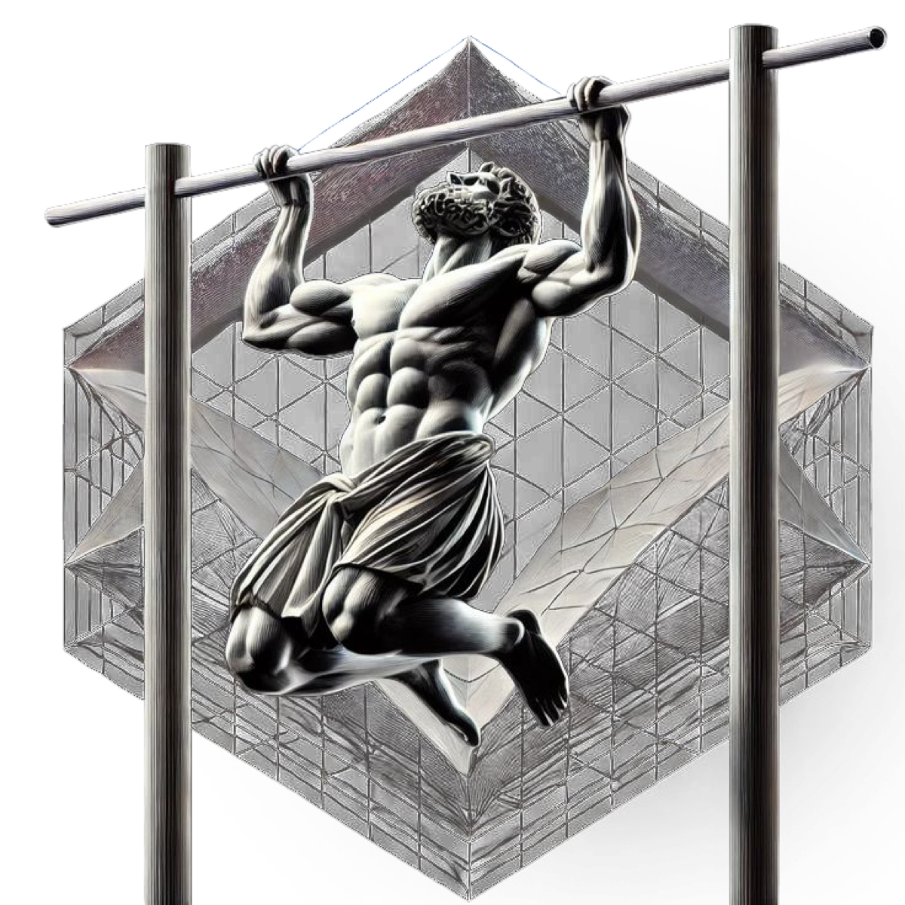

Díky ICF metodice, dennímu vedení a systému mikro-kroků vybuduješ návyky, které drží — víc energie, víc pozornosti, efektivnější růst. 15–20 minut denně stačí.

Žádné video kurzy, které nikdy nedokoukáš. Živé vedení, denní systém a podpora, dokud návyk nestojí.
Individuální onboarding — nastavíme tvůj cíl, tvé návyky a tvé tempo. Výzva se přizpůsobí tobě, ne naopak.
Pondělí a pátek 8:30 — status, zpětná vazba a energie skupiny. Začneš týden s jasnem a zakončíš ho s výsledky.
Aplikace Dimi tě každý den provede check-inem a reflexí. Za 3 minuty víš, kam šlapeš — a proč.
Zprávy i hlasovky kdykoli. Když se zasekneš, nečekáš na příští call — řešíme to hned.
Koučink postavený na certifikované metodice, ne na motivačních citátech. Nová identita a vnitřní motivace místo síly vůle.
Na obnovu pozornosti, energie a reflektování svého růstu. Dostane ho každý účastník hned na startu.
Zmapujeme, co ti bere energii, a eliminujeme toxické návyky. Už v prvním týdnu pocítíš víc energie a klidu — první výsledky do 7 dnů.
Stavíme návyky, které chceš — pohyb, focus, ranní režim, byznys rituály. Ne na sílu, ale přes novou identitu: přestáváš se přemáhat a začínáš být.
Návyky zatížíme realitou: náročné dny, cestování, stres. Odcházíš se systémem, který přežije i tvůj nejhorší týden — a s plánem, co dál.
„Jestli se z tebe nestane nový člověk,
nechci po tobě ani korunu.“
Když výzvu dokončíš a nepocítíš, že ti přinesla skutečnou změnu, neplatíš nic. Riziko nesu já, ne ty. — Denis
Skupina je malá a výsledky stojí na tvém zapojení. Proto se do výzvy vstupuje přes krátký dotazník — chráníme tvůj čas i energii skupiny.
Zabere 2 minuty. Nezavazuje k ničemu.
„Získal jsem nadhled, klidný drive a soustředění na podstatné věci. Začal jsem se pravidelně hýbat a konečně mám prostor na vlastní projekty.“
Michal Kuzněcov
CEO, Kuzněcov Partners Invest
„Žena se mě na poslední dovolené ptala, co se mnou ten Denis dělá. Vyházel jsem toxické činnosti a výzvy beru jako příležitost k růstu.“
Lukáš Scorvan
programátor, founder tech startupu
Vyplň dotazník, rezervuj si hovor — a za 21 dní se poznáš v zrcadle.